Gameplan: Productivity & Habit Tracker
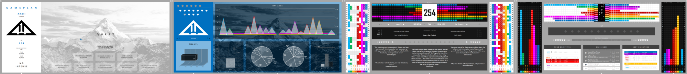Use gamification to create a stimulating and engaging productivity and habit tracker.
Solo Creator
Purpose
My aim was to develop a productivity tracker that treats habits like skills in a role-playing game, allowing users to level up different aspects of their life and receive daily visual feedback on their progress. The to-do list was designed to mimic the mission or quest systems found in role-playing games, enhancing the sense of achievement for completing tasks, whether big or small. Additionally, the project sought to create a comprehensive hub for users to track all elements of their life, including:
- Progress on personal goals and development.
- Intricate planning of the day with time blocking.
- Callender for the month as well as the year.
- Note boards for keeping on target and developing ideas.
- Complete journaling exercises and shadow work.
- Receive rewards and use bonus items for further encouragement.
- Financial planning for the month and creating an ideal.
- Recording achievements, both minor and major.
- Long-term habit consistency and abstinence tracking.
- Travel guides and future destinations.
Research
- Trying out different productivity and gamification apps such as Epic Win, Habitica and Forest, testing their functionality and how well they motivated me.
- My personal extensive experience playing many types of games and in particular RPGs, creating and developing characters within virtual worlds.
- Books on habits and lifestyle such as ‘Atomic Habits’ by James Clear and ‘10 Rules for Life’ by Jordan Peterson, as well as more philosophical works on life like ‘The Alchemist’ by Paulo Coelho.
- Studying lifestyle, habits, philosophy, deep introspection of the self, understanding the brain and simply how we tick.
- My own personal self-improvement journey and deep analysis of my daily life and how I think and function.
Creation
- Built from the ground up in Excel.
- Created a grid-style layout and structure for each sheet.
- Curated planning of the flow, look and integration of pages.
- Wrote formulas and developed systems to ensure all elements worked together seamlessly.
- Developed dynamic automated visuals that respond according to user input giving constant feedback.
- Pushed beyond standard Excel use by writing VBA code and creating macros.
- Performed extensive testing over time with me operating as an example user.
Final Product
There are a total of sixteen sheets that form the Gameplan workbook. For each sheet, scrolling down reveals additional areas and functions. Shown below is an example month from my own use of the Gameplan as a test subject. The example month is January 2024. Note that the theme colour for each month is dynamic. Some data has been adjusted for privacy reasons.
The images below show the main areas of each sheet with explanations of their uses and functionalities.
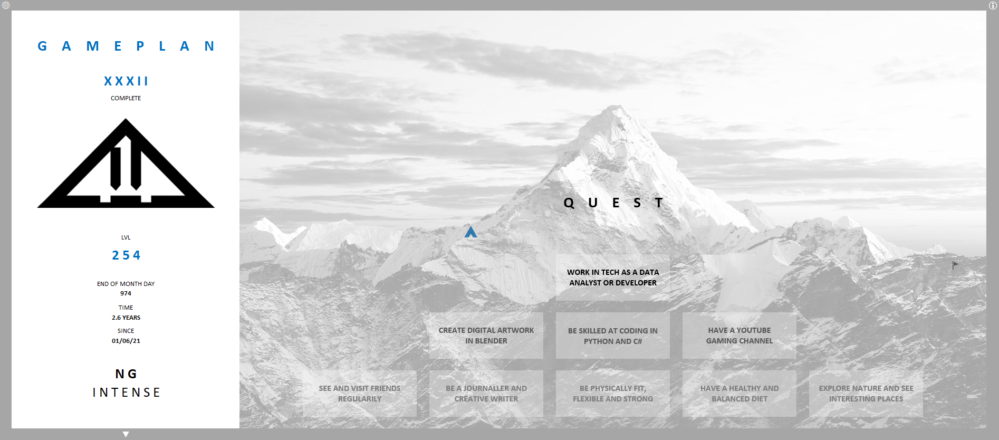^: The start sheet, for setting life goals, choose difficulty, set the start date and read a guide on how to use the gameplan.
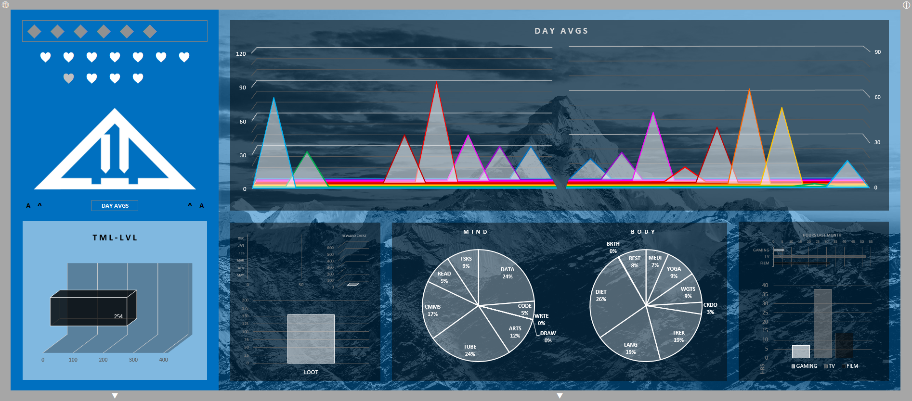HUD: This is a visual dashboard for everything the player is doing and has done in the gameplan, a way to see progress visually and better understand the actions taken.
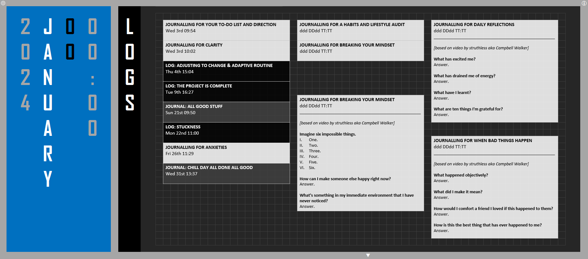LOGS: Where the player can write logs with thoughts on anything and everything, or follow journalling prompt questions or exercises. There is a space for writing out logs within text boxes or to make note of where to find handwritten journals or audiologs.
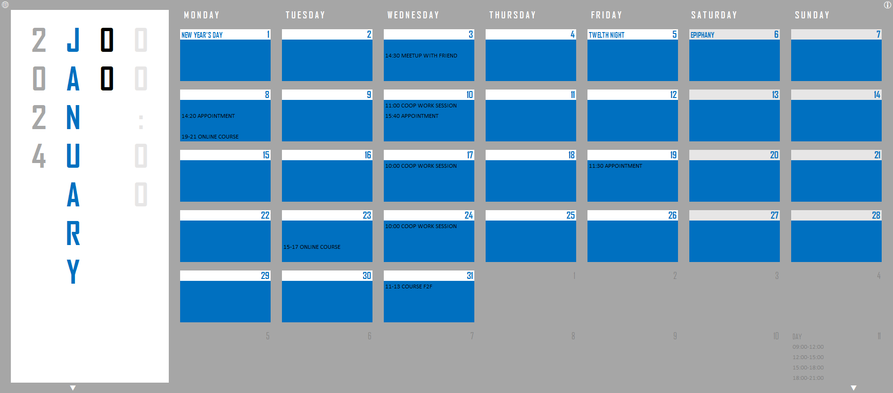PLANS: This serves as a simple calendar for the month and planner for the year. But it expands on this by allowing for a basic overview of also the years and even decades.
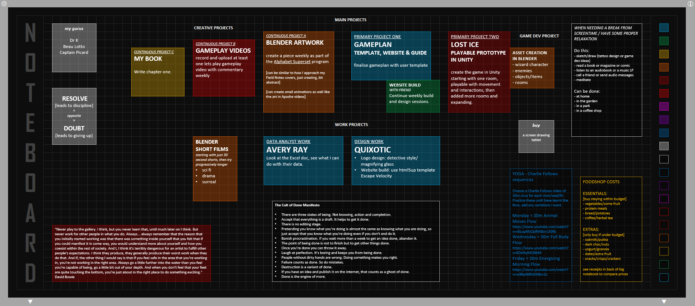NOTES: Designed as a place to gather all thoughts, ideas and vital things to remember. By keeping notes all in one place the aim is to never lose an idea and stay on track with what to do now and to do next.
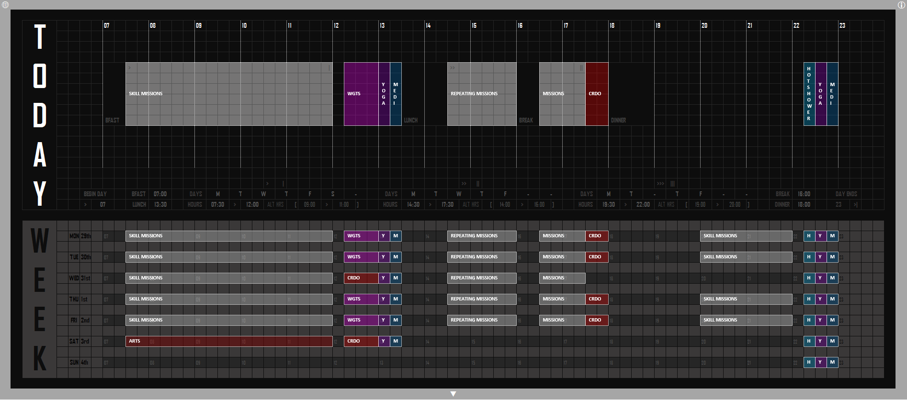TIMINGS: A way to plan out the day and the week in detail with timeblocking, aimed at creating a visual and interactive planner using shapes.
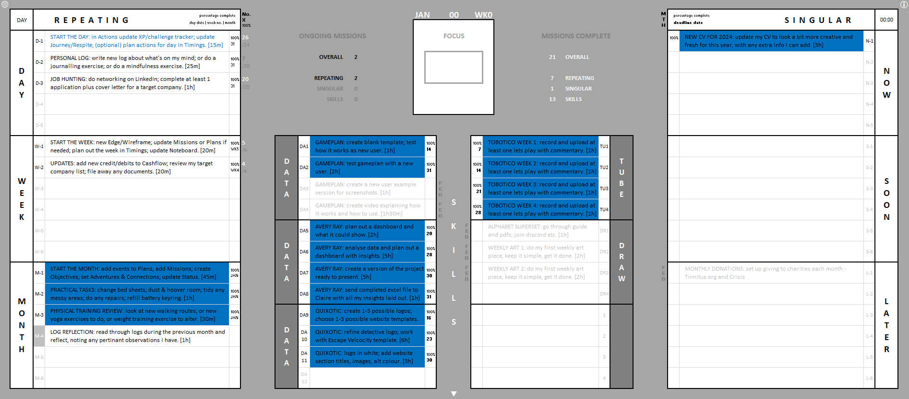MISSIONS: An elaborate to do list, aimed at breaking down tasks and keeping focus by highlighted the fastest tasks and keeping track of deadlines, as well as locking in a focused mission for the day.
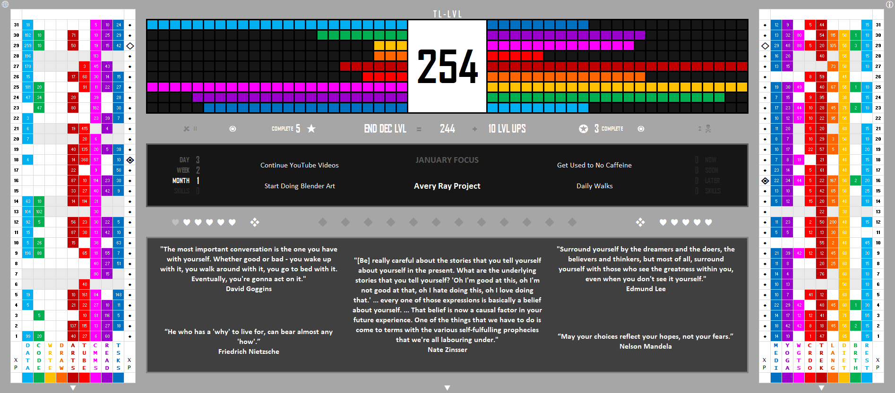ACTIONS: This is the core of the gameplan, where all XP (experience points) for actions done is entered. It works as a hub for seeing vital info about the gameplan and current goals, with some inspiring quotes showing to help the player feel positive and motivated.
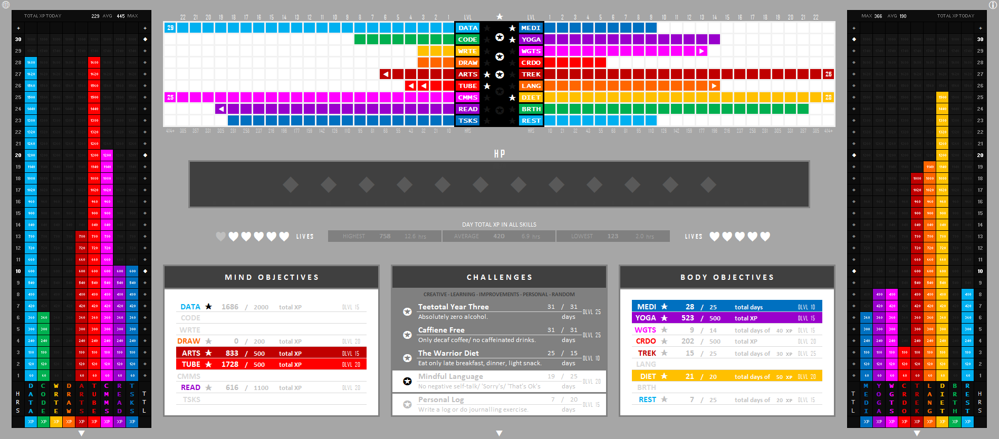PROGRESS: The secondary core showing current progress and stats in all areas of the gameplan. The objectives and challenges are designed to give specific focus and intention to actions done.
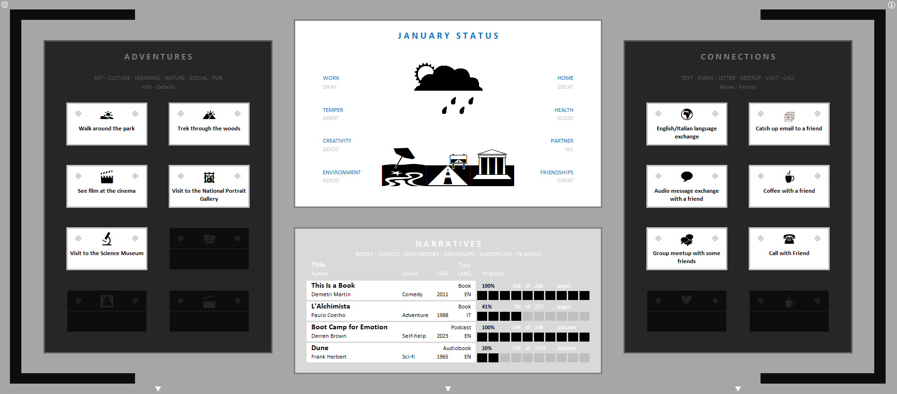JOURNEY: A place for examining overall wellbeing, both mental and physical and ensure the player is both engaging with the world via adventures and interacting with other people via connections.
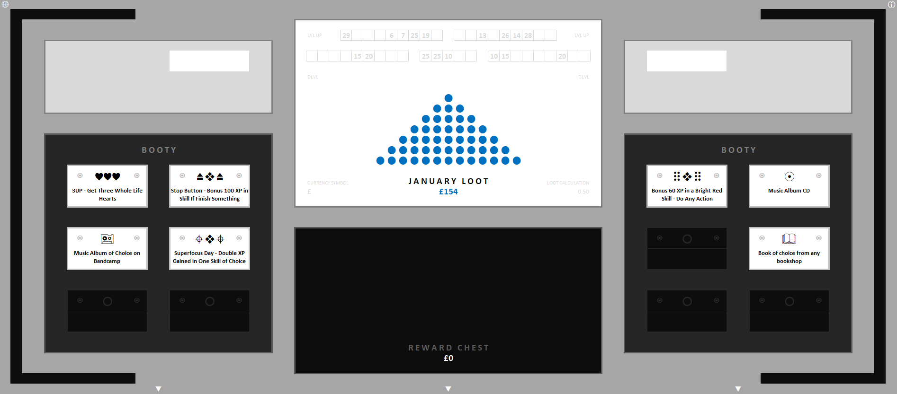BOUNTY: For rewarding the player both with random items and sums of money, so as to encourage consistency with habits and actions.
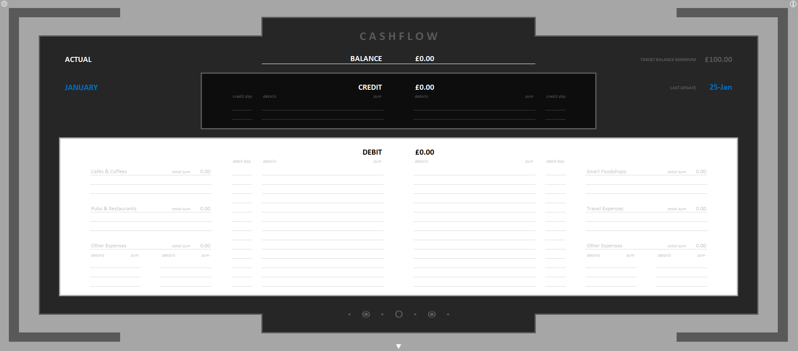MONEY: To organise spending and keep an eye on finances.
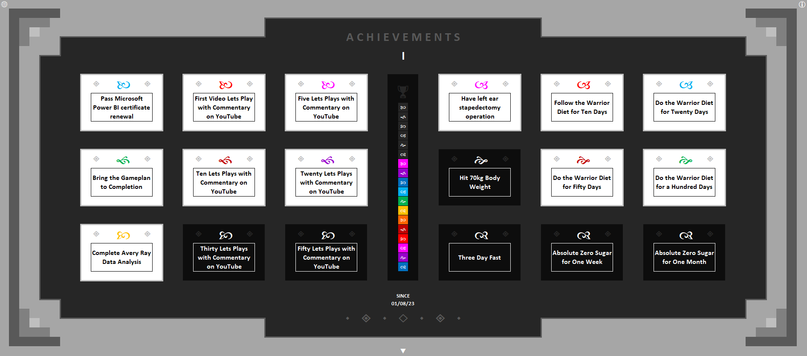VICTORY: A space for acknowledging and celebrating small milestones, wins and positive things done. It serves as a reminder of successes small and large along the journey of life and through using the gameplan.
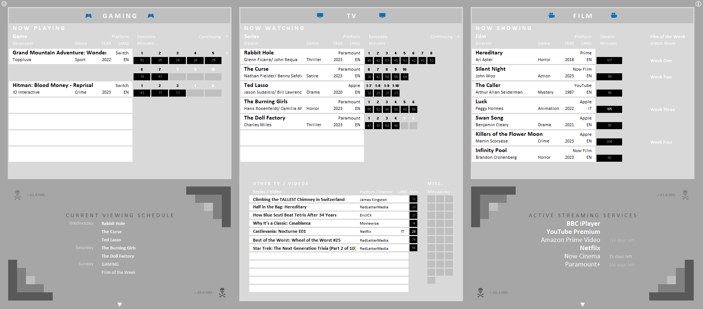RESPITE: Intended to encourage quality over quantity of media. To create limits and stick to them, and only select media really worth consuming, so that even downtime is productive.
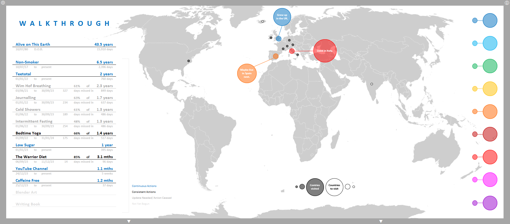GUIDE: An area to put useful info, plans or wisdom gained that do not fit anywhere else, as well as tracking long-term habits and actions.
Conclusions
As both creator and tester, I found the gameplan highly effective in transforming my habits and increasing my productivity:
- Positive Habits: I established new daily routines such as yoga, meditation, fasting and walking.
- Negative Habits: I reduced consumption of sweet things, junk food, alcohol and caffeine.
- Motivation: The visual feedback and rewards system kept me motivated, especially during challenging times, pushing me to consistently take action, even with the small but often fundamental steps.
- Clarity and Focus: The gameplan helped me to maintain a clear vision of my aims and the purpose behind daily actions, encouraging me to continue moving forward.
- Task Management: Enabled breaking down overwhelming tasks into manageable mini-missions, as well as time-blocking both productive hours in the day and the vital rest periods.
- Personal Development: By having a clear understanding the what, the how and the when of my personal objectives I have been able to achieve, or at least start along the path towards, things that are important to me both in my private life and for my skills and career.
By gamifying all these elements of my life, the gameplan not only made my daily activities and actions more engaging but also fostered in me a greater sense of purpose and achievement.
Learnings
Summary of main challenges faced during development and things learnt:
- Frequent updates due to adjustments and new features.
- Better planning could have reduced time spent on revisions.
- Increased complexity as the gameplan expanded.
- Satisfied with additions, but may be overly complex for some users.
- Simplifying the gameplan now would be time-consuming.
- Current version functional but Excel's clunkiness may deter some users.
- Aim to make the gameplan more accessible, interactive, and engaging.
- Future goal: transfer the gameplan to an app for better usability.
During the creation of the gameplan there were many adjustments and iterations, therefore frequent updates were necessary as I added in new features. Better forward planning could have minimized the time I spent on these revisions, as many careful changes were often needed to the formulas, background tables, conditional formatting or the structure of areas.
As the scope of the gameplan grew the Excel workbook became ever more complex. While I am satisfied with all the additions to the core concept and they do all work very well together to form a cohesive whole, for some users other than myself the complete package as is may be overly complex. At this point to break the gameplan down into a simpler version could be a very time-consuming operation, however with better planning of the project that more basic version could’ve been a great alternative for potential users.
In the future I would like to transfer the gameplan to an app format usable on phones, tablets and PCs, as I believe all the aspects of it that work well, would work even better in that form. The current version of the gameplan is perfectly usable and functional but the inherent clunkiness of Excel may put some people off, indeed an users unfamiliar with Excel may face difficulties. I would like to open up the benefits I have experienced from using the gameplan to as many people as possible with the concept growing to something even more interactive and engaging.